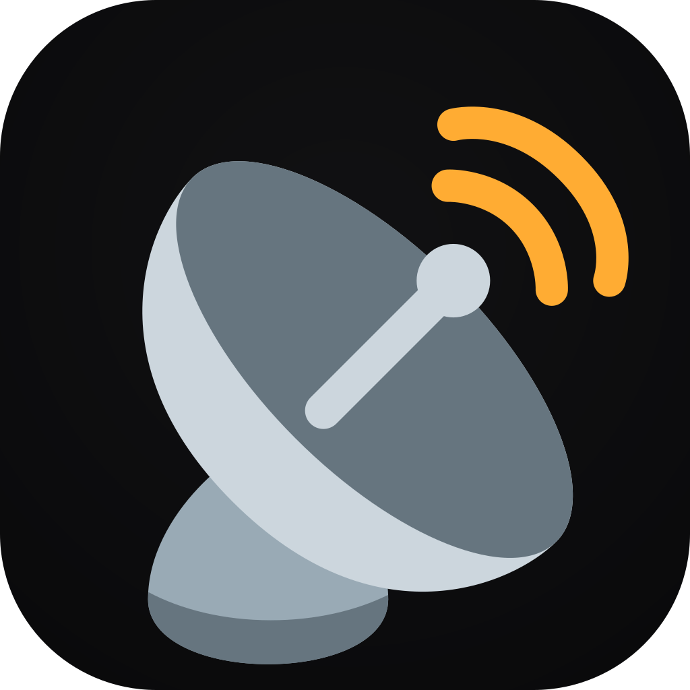

1 · BaselineEmojis actuels
☀ 22°MontréalQuébec
LE RADAR.ca
Repère existant. Les emojis natifs sont expressifs, mais changent selon Apple, Google et Microsoft.
Cinq pistes rendues côte à côte. Chaque carte conserve un bandeau météo distinct : les essais ne modifient ni ses données ni son comportement dans le site.
Repère existant. Les emojis natifs sont expressifs, mais changent selon Apple, Google et Microsoft.

LE RADAR.caVersion retenue. Le logo PWA encadre le titre, avec une parabole retournée horizontalement à droite.
La piste recommandée. Le logo PWA ancre la marque; l’emoji journal existant équilibre les volets radio et presse.
Très souple. Une icône SVG peut changer selon la section Actualités/Radio; le hasard pur est à éviter pour préserver les repères.
Le plus direct. La marque dépend entièrement de la typographie : excellente en mobile, moins distinctive à très petite taille.